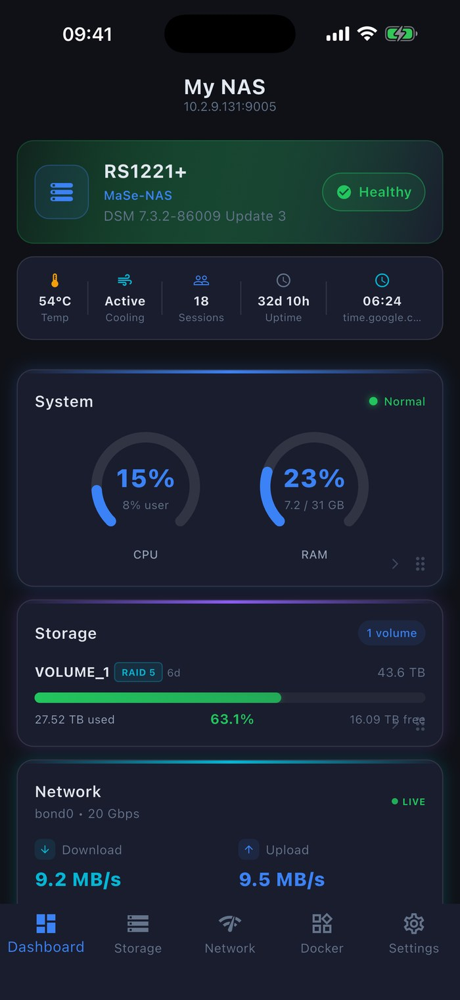

Independent monitoring and management for your Synology NAS - storage, system health, Docker, cameras, and more, on every device you own.

Real screenshots from Syno Manager - dashboard, system monitor, storage, tasks, files, themes, and more. Tap any to zoom.


Everything DSM shows you, made mobile - and it gracefully hides what your account can't see.
Live CPU, RAM, temperature, and uptime at a glance. Customizable cards let you see exactly what matters - system health, storage usage, network throughput, and more.
View all running containers with real-time CPU and memory usage. Start, stop, restart containers, and access logs - full Docker control from your phone.
Live camera feeds in a clean grid layout. Tap to view full-screen, see recording status, and monitor all your Surveillance Station cameras in one place.
Volume usage, RAID status, individual drive temperatures, and SMART health data for every disk. Know the state of your storage at all times.
Live bandwidth graphs for every network interface. Track download/upload speeds, active connections, bonded interfaces, and DNS configuration.
See all installed DSM packages and their status. Monitor running services, scheduled tasks, UPS battery status, log entries, and shared folders.
Configure your dashboard categories, customize the navigation bar, choose your theme, and set polling intervals. Make the app work the way you want.
Quick Actions, Storage Overview, and System Status widgets for your home screen. Glance at your NAS health without even opening the app.
Enter your NAS IP or hostname and port. No MiyaraHub account, no sign-up.
Authenticate with your existing DSM credentials - sent only to your NAS, using the same mechanism as the DSM web portal.
Dashboards, Docker, cameras, storage, network, packages, and tasks - straight from your phone, tablet, or desktop.
Syno Manager is designed with a privacy-first architecture. Minimal data collection, no user tracking, no cloud dependency.
All communication happens directly between your device and your NAS over your local network. Nothing is routed through external servers.
Uses the same authentication mechanism as the DSM web interface. Your credentials are sent only to your NAS - never to us.
Firebase Crashlytics to catch bugs and improve stability - no personal data, no usage tracking, no ads. The app never collects NAS data or credentials beyond your device.
Connection details are stored on-device using platform-secure storage - iOS Keychain and Android Keystore.
Syno Manager is an independent, third-party application developed and published by MiyaraHub Technologies LLC. It is not created by, affiliated with, endorsed by, sponsored by, or officially connected with Synology Inc. or any of its subsidiaries or affiliates.
"Synology," "DiskStation," "RackStation," "FlashStation," "DSM," "Surveillance Station," "Download Station," "Hyper Backup," "Active Backup," and all related product names and logos are trademarks or registered trademarks of Synology Inc., used here for identification and compatibility purposes only.
Get Syno Manager on your platform of choice - a one-time purchase, no subscription.